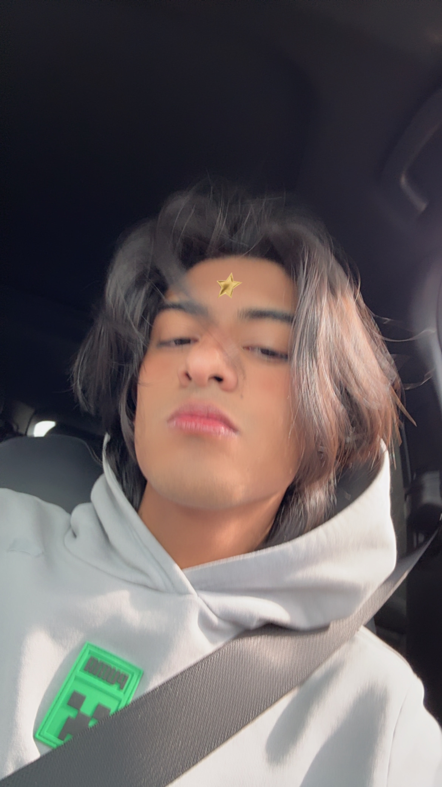

¿ Quién es este wey ?
Mi nombre es Mario Ramses Espinosa Madrigal y soy un artista ¯\_(ツ)_/¯
Soy un artista enfocado en la creación digital, donde combino diseño, ilustración y tecnología para dar vida a ideas visuales únicas. Mi trabajo nace de la curiosidad y de la necesidad de experimentar con nuevas formas de expresión en internet. Desde pequeño me han inspirado los videojuegos, la cultura digital y el arte contemporáneo, elementos que hoy influyen directamente en mi estilo. Me gusta crear piezas que no solo se vean bien, sino que también transmitan algo o conecten con quien las ve. Para mí, el arte es una forma de explorar, equivocarme y volver a intentar, siempre buscando evolucionar y encontrar nuevas maneras de comunicar. Este espacio es una muestra de lo que hago y de lo que soy como creador.